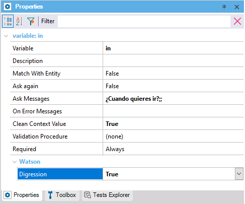

This property applies at UserInput level and allows specifying whether a digression can be inferred from the user input in question (i.e., if it is possible to go away from this user input or not).
The default value for this property is False because it is preferable that it be enabled by the developer. This is especially relevant considering that, in some cases, a user input value that is a valid text can also trigger another flow.
It is visible if the NLP Provider property is set to Watson.

This property applies only at design-time.
This property is available since GeneXus 17 upgrade 4.
| Backlinks | |
| Available For Digressions property | Return After Digression property |